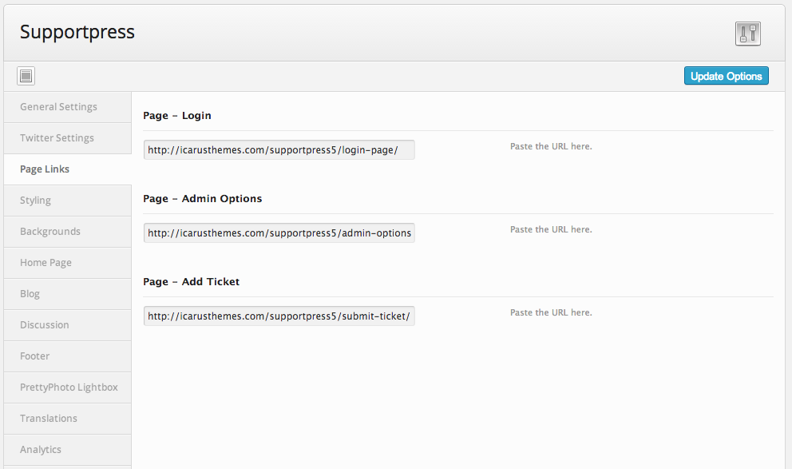

SupportPress
Theme Documentation
Created by Jason Herndon on Feb 16, 2014
Welcome Back to top ↑
Thanks for buying this theme, I hope you truly enjoy working with it! This document covers the basic installation and use of this theme. If you have any questions that aren’t addressed here, feel free to post in the forum at Themeforest or message me on my page.
Getting Started Back to top ↑
Installation Back to top ↑
You can install SupportPress in one of two ways:
Via FTP: Using any FTP program, you can upload the unzipped theme to the /wp-content/themes/folder on your site.
WordPress Installer: Basically, you can go to Appearance > Add New Themes > Upload and upload the theme.
Video Demonstration
SupportPress Theme Install from IcarusCreativeOrg on Vimeo.
*Note - this is for another theme - but the steps taken are identical.Either way, be sure to activate the theme by going to Appearance > Themes and activate SupportPress.
For more info, you can visit: http://codex.wordpress.org/Using_Themes
Initial Setup Back to top ↑
Fistly, you'll want to take a look at the general settings that are found in the backend under the menu option "SupportPress". Once there, you can add the header logo, customize colors and a few other things which we'll cover in a moment.
Next, you'll need to add the following pages. Once you've added each page, you will need to add their URL's to the theme's backend. This is because while you are free to arrange the pages and menu however you'd like, there are some pages, the ones above, which are required to be added. Simply copy/paste the URL's for each page into their corresponding field.

Theme Usage Back to top ↑
The following are screenshots of how to use SupportPress and it's supported functionality.
Adding/Editing Users Back to top ↑
All of your users can be added via Wordpress's Built in User System. SupportPress is built to run on three types of users:
The ADMIN Role:
This is the standard WP Admin role and has full editing rights to all tickets and articles.
The EDITOR Role:
Editor are help desk representatives that can be assigned to a specific category, and only that category, of help desk tickets. They have the same options of editing a ticket an admin has, they can just only see their group of tickets.
The SUBSCRIBER Role:
A subscriber is anyone who has registered with the site. They cannot edit tickets and can only see tickets that they've requested.
User images are generated via Gravatar but can also be generated using the WP User Avatar plugin (outlined below).
For more information on Gravatar: CLICK HERE
You'll want to make sure that the site is set up to allow registration and to assign new registrants as subscribers. You can access this in General Settings in Wordpress.
Login Page Back to top ↑
While Users can log in when prompted, or register, the theme also supports creating a generic login page which users can visit from the link at the top of their page. To set this up:
- Add a page with the custom template type: "Login"
- Add that page's URL into the backend Theme Options Panel.
Ticketing Back to top ↑
Please see the above section on Users, as it is CENTRAL to how ticketing works.Assigning Users to Categories
Next, you'll want to assign your specific staff members to categories based on where they will have access. Remember, anyone in WP as an Editor can be assigned to a specific Ticketing Category. To make this easier, I've created a menu that shows on the front end:
To view this menu, simply:
- Create a Page with the Template type: "Admin Options"
- Make sure that you've entered the URL of this page into the Theme Options Menu
- Visit the Front Site and if you scroll to the bottom you will see a link that only appears if you are an Admin and the first two steps here are created. Visit this link to update any of the Editors in WP.
Don't forget to add a page with the Custom Template set for adding tickets, and to then add this URL into the Theme Options page. This will ensure that when subscribers are logged in, and have clicked on the help desk, they can submit a ticket.
All Tickets by default are "Open" and have a Priority of "Low". All are unassigned until someone from their category, or an admin, assigns the ticket. Admins and Editors can update the ticket status at any time. Any time that a change or comment is made, the requestor will be notified.
Assuming your users are set up correctly, setting up the ticketing is a breeze. Simply add the page with the custom template of "Help Desk" (with or without the prioritization for Admins). When each user visits this, depending on their roles, they will see different things.
Twitter Back to top ↑
To use the Twitter features built into SupportPress - you'll need to do three things.1 - Create API Access
Twitter requires that you create an API key and tokens for your websites integration. More about this can be learned at dev.twitter.com - but the quick way to get started would be to:
- Go to dev.twitter.com and sign in with your personal or company Twitter login (whichever you want to be the main face on Twitter where people go for support).
- Go to dev.twitter.com/apps and create and "Application". You need to give them all the information they ask, but the callback URL is not necessary or supported
- Click the Oauth Tab in the App Settings that you've just created. Go through the processes of creating consumer and access tokens and secrets. All for of the following should be filled in:
2 - Connect to Theme
In the Theme Admin settings, copy those four fields into your Twitter Settings. Also - here is the screen where you specify what search term to use. This is the term that you will give people to use for support.
3 - Add Page
Add a page in your theme with the Template - Twitter Feed selected. Apply this page to whichever menu you'd like and you're all set.
Knowledgebase Back to top ↑
The KnowledgeBase is easy to setup as well. Simply:
- Add a page with a custom template for the KnowledgeBase
- Add the categories of Articles in the KnowledgeBase
You can now add articles to this custom post type and the KnowledgeBase page will list and sort all of the articles, grouping them together and generating the sidebars.
Documentation Back to top ↑
The Documentation is setup in a similar way to the KnowledgeBase but they function differently. The documentation is presented in a linear fashion, where the posts are ordered by THE DATE ADDED or THEIR SLUG. You can manipulate and edit either of these to hack the order to be what you would like it to be.
- Add a page with a custom template for the Documenation
- Add the categories of Sections in the Documentation
- Add your docs to each section, using their slug or post date as a way to order them.
FAQs Back to top ↑
The FAQ is likewise made by:
- Add a page with a custom template for the FAQs
- Add your questions to the custom post type FAQ.
The FAQ page auto generates this section.
Forum & Chat Back to top ↑
BBPress Forum
This theme has been custom coded to work with bbPress Forum. Specifically, we've:
- Added a Sidebar for the bbPress Index Page
- Added a Sidebar for Forums
- Added a Sidebar for Topics
- Added a Sidebar for Replies
- Added some extra CSS for styling
To integrate it with SupportPress, simply download and activate the plugin, and then add a page with the custom post type "Forum".
For more information on using bbPress visit http://www.bbpress.org.
Chat
SupportPress uses the QuickChat Plugin for it's chat features. There are lots of cool chat plugins with great features - we simply chose this one because it was lightweight and had the ability for you to create as many chat "rooms" as you'd like via a shortcode.
To integrate it with SupportPress, simply download and activate the plugin, and then add a page with the custom post type "Chat".
For more information on using QuickChat visit http://wordpress.org/extend/plugins/quick-chat/.
Extra Pages - top
Included in this theme are left/right sidebar pages, full width pages, contact page pages and blog postings. You can view all these page types under the Page Template settings on each page.
Plugins Back to top ↑
SupportPress takes advantage of the following two plugins:
- WP User Avatar: Allows you to replace/override the gravatar image for a user by default. Click here for more info on this plugin. We've integrated it into the front end of SupportPress on a users profile so it is completely editable on a users profile page. PLEASE NOTE: If you are planning to use this plugin (which we recommend) you should enable it not only in WordPress but in the SupportPress theme settings as well.
- Quick Chat: For the chat page, if desired, SupportPress has customized CSS to match Quick Chat out of the box. Click here for more info on this plugin.
Widgets Back to top ↑
We provide the following custom build widgets for SupportPress:
- Recent Custom Posts - Display Recent Posts from a Custom Post Type
- Recent Custom Posts Type Categories - Display Recent Posts from a Custom Post Type Categories
- Video - A way to showcase videos
As well, there are extra widget spaces for sidebars and pages.
Support Back to top ↑
Again, thank you for purchasing this theme! If you have any questions that are beyond the scope of this document, feel free to pose them in the dedicated support forum on Themeforest.net. or email me directly at icaruscreativeorg@gmail.com.